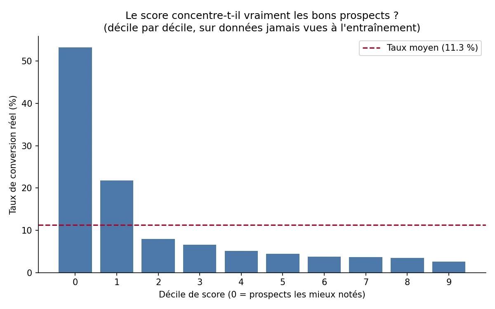

Pourquoi j’ai retiré la durée de l’appel
Je me suis appuyé sur environ 41 000 contacts issus de campagnes de télémarketing bancaire. J’ai retiré la durée de l’appel. On ne la connaît qu’après avoir raccroché, alors que le score doit être disponible avant de composer le numéro.
Ce que vaut le haut du classement
Dans les données étudiées, les 10 % de contacts les mieux classés ont un taux de conversion égal à 4,7 fois le taux moyen. C’est le premier groupe que je regarderais si l’équipe ne pouvait appeler qu’une petite partie de la liste.

Quand la durée de l’appel est-elle disponible ?
Quand je choisis qui appeler, je ne peux pas connaître la durée de l’appel. C’est pour ça que je l’ai retirée du modèle.
Une fois l’appel terminé, la durée peut aider à comprendre comment l’échange s’est passé. À ce stade, le choix du contact a déjà été fait.
Le test que je ferais avec une équipe commerciale
Ces campagnes concernent du télémarketing bancaire. Pour appliquer la méthode à des prospects B2B, je referais le test avec les données de l’équipe commerciale et je vérifierais le résultat sur des campagnes plus récentes.
Je choisirais la métrique en fonction du nombre d’appels
Si l’équipe ne peut joindre que 10 % des contacts, je comparerais le taux de conversion de cette tranche au taux obtenu par une sélection aléatoire de même taille. Je regarderais aussi quelle part de toutes les conversions cette tranche concentre. Un groupe peut avoir un bon taux de conversion tout en laissant de nombreux prospects intéressés plus bas dans la liste.
Une question que le score ne résout pas
Le score classe les contacts selon leur probabilité de répondre favorablement dans le contexte des anciennes campagnes. Pour savoir combien de souscriptions sont réellement dues à un appel, il faudrait comparer des contacts similaires, dont une partie n’est pas appelée. Ce sont deux questions différentes pour l’équipe commerciale.
Ce que je ferais en pratique
Je garderais les campagnes les plus récentes pour le test, vérifierais que chaque variable est connue avant l’appel et comparerais le score à une règle simple. L’équipe pourrait ensuite tester les deux méthodes sur des listes de taille égale. Je retiendrais le modèle si le gain se répète et justifie le temps passé à produire et maintenir le score.